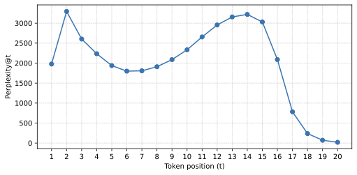

Variable-Length Semantic IDs for Recommender Systems
Подробное саммари статьи:
Авторы: Kirill Khrylchenko.
Аффилиации: National Research University Higher School of Economics; HSE University.
1. Коротко: о чем статья
Статья предлагает заменить фиксированную длину semantic ID на variable-length semantic IDs. В большинстве работ про generative recommendation item кодируется последовательностью из одинакового числа токенов, например [c1, c2, c3, c4]. Автор утверждает, что это неэффективно: реальные каталоги имеют long-tail distribution, поэтому популярным item'ам достаточно короткого кода, а редким и cold item'ам нужен более длинный и выразительный код.
Главная идея: semantic ID должен вести себя ближе к естественному языку. Частые сущности получают короткие обозначения, редкие - более длинные. Это соответствует Zipf's law of abbreviation и одновременно экономит token budget в sequential/generative recommender'ах.
Метод формулируется как discrete variational autoencoder с Gumbel-Softmax reparameterization. Модель учится выбирать semantic tokens и длину кода L <= T, избегая нестабильности REINFORCE-based training, типичной для emergent communication.
2. Контекст: зачем semantic IDs и почему фиксированная длина плоха
В recommender systems item catalog часто содержит сотни тысяч, миллионы или миллиарды объектов. Если generative model должна предсказывать atomic item ID, возникают проблемы:
- огромный item vocabulary делает full softmax дорогим;
- atomic ID не несет семантики, поэтому плохо переносится на cold-start и long-tail;
- LLM vocabulary и item IDs находятся на разных уровнях абстракции;
- в autoregressive retrieval каждый item как один ID не дает естественной иерархии и partial matching.
Semantic IDs решают часть этих проблем: item представляется sequence of low-cardinality tokens.
item -> semantic ID
918273645 -> [124, 39, 876, 12]Но почти все популярные методы строят IDs фиксированной длины. Это означает, что head item, который модель видит постоянно, и rare item из long tail получают одинаковое число tokens. Для автора это неестественно и неэкономно: частые item'ы можно узнавать по короткому сигналу, а длинные описания стоит тратить там, где нужна дополнительная информация.
3. Связь с emergent communication
Статья активно опирается на идеи emergent communication. В Lewis signaling game есть sender, receiver и объект:
- sender видит объект и отправляет дискретное сообщение;
- receiver должен восстановить или выбрать объект по сообщению;
- сообщения могут быть переменной длины;
- length penalty заставляет систему учить более экономные коды.
Это почти та же структура, что и item tokenizer:
- item embedding - объект;
- encoder/tokenizer - sender;
- semantic ID - сообщение;
- decoder/recommender - receiver.
Разница в том, что emergent communication часто обучается через REINFORCE, а это плохо масштабируется на большие каталоги. Автор переносит идею variable-length messages, но обучает ее через dVAE и Gumbel-Softmax.
4. Постановка задачи
Пусть есть item embedding x in R^d. Нужно получить дискретный код:
Где:
T- максимальная разрешенная длина;L- фактическая длина semantic ID;z_t- токен из общего vocabularyV;- позиции после
Lсчитаютсяpad.
Важная деталь: в отличие от многих hierarchical tokenization methods, статья использует shared vocabulary across positions. Один и тот же token имеет один и тот же смысл на любой позиции. Это ближе к естественному языку, где слово не меняет vocabulary в зависимости от позиции во фразе.
5. Probabilistic model
Автор задает generative model:
Здесь L - latent length variable, z - latent discrete message, а decoder восстанавливает item embedding только по prefix z_{1:L}.
5.1. Prior over symbols
Для токенов используется uniform prior:
Это помогает избегать collapse в маленькое подмножество токенов и поощряет более широкое использование vocabulary.
5.2. Prior over length
Для длины используется truncated geometric distribution:
В ELBO такой prior превращается в явный penalty на expected length. Чем длиннее сообщение, тем выше регуляризационная цена.
6. Variational inference и stopping probabilities
Истинный posterior p(z, L | x) intractable, поэтому вводится approximate posterior:
Токены генерируются autoregressively. Длина моделируется через stopping probabilities:
Вероятность остановиться на длине l:
При этом автор не добавляет EOS-token в vocabulary. Length model отделен от content tokens, поэтому длина контролируется explicit prior/regularizer, а не конкурирует с обычными semantic tokens.
7. Objective: из чего состоит loss
Итоговый loss:
7.1. Reconstruction loss
Reconstruction считается по всем prefix lengths, взвешенным вероятностями длины:
В реализации length distribution для reconstruction сглаживается: 0.9 learned distribution + 0.1 uniform over prefixes. Это заставляет decoder быть полезным на разных длинах и стабилизирует training.
7.2. Vocabulary regularization
Vocabulary regularization - alive-weighted KL к uniform prior:
Если позиция с высокой вероятностью входит в сообщение, ее token distribution регуляризуется сильнее. Это помогает использовать vocabulary шире.
7.3. Length regularization
Expected length penalty стимулирует короткие коды, а entropy term предотвращает слишком ранний collapse в одну длину.
8. Residual encoding with soft relaxation
Классический residual quantization выбирает ближайший codeword hard assignment'ом и вычитает его из residual. Здесь используется soft differentiable аналог:
- encoder предсказывает logits по vocabulary;
- Gumbel-Softmax дает relaxed one-hot distribution;
- из codebook берется expected embedding;
- этот expected embedding вычитается из hidden state;
- модель переходит к следующему token position.
Так сохраняется интуиция residual quantization, но обучение идет стандартным backpropagation.
8.1. Пошаговый алгоритм variable-length dVAE
- Зафиксировать item embedding space. На вход tokenizer получает \(\mathbf{x}\), например 64D/128D item embedding из существующей модели; embedding model не меняется во время tokenizer ablation.
- Сгенерировать relaxed tokens. Autoregressive encoder на каждом шаге \(t \le T\) предсказывает logits по shared vocabulary, Gumbel-Softmax дает differentiable one-hot approximation.
- Обновить residual state. Expected token embedding вычитается из hidden/residual representation, поэтому следующие позиции кодируют оставшуюся информацию.
- Предсказать stopping probabilities. Отдельная length head оценивает \(q(s_l=1 \mid x,z_{1:l})\); EOS не смешивается с semantic tokens.
- Взвесить reconstruction по длинам. Decoder восстанавливает \(\mathbf{x}\) по каждому prefix, а loss суммирует reconstruction с весами \(q(L=l)\), сглаженными небольшой uniform component.
- Добавить регуляризации. Vocabulary KL поддерживает broad token utilization, geometric length prior и \(\lambda E[L]\) делают частые объекты короче, entropy term не дает длине схлопнуться слишком рано.
- Сформировать hard IDs для downstream. На inference берутся argmax tokens до выбранной stop length; для sequential recommender variable IDs укладываются в фиксированный token budget.
9. Экспериментальный setup
9.1. Датасеты
| Dataset | #Items | #Events | Emb. dim | Head share |
|---|---|---|---|---|
| Yambda | 268K | 82M | 128 | 0.747 |
| VK-LSVD | 900K | 95M | 64 | 0.276 |
| Amazon Toys & Games | 305K | 12M | 128 | 0.597 |
Yambda и VK-LSVD используют last-week test split. Amazon Toys & Games использует last-four-weeks test split. Для Yambda/VK-LSVD берутся likes, для Amazon positive feedback - ratings >= 4.
9.2. Baselines
- R-KMeans - residual KMeans по item embeddings, фиксированная длина.
- dVAE fixed-length - тот же variational подход, но без переменной длины.
- REINFORCE-based emergent communication baseline - sender/receiver через policy gradients и EOS-token.
9.3. Основные hyperparameters
- maximum semantic ID length:
T = 5; - vocabulary size:
4096; - batch size:
8192; - optimizer: AdamW, learning rate
1e-3, weight decay1e-5; - Gumbel temperature annealing: from
1to0.5on Yambda, to0.7on VK-LSVD and Amazon; - KL beta annealing to
0.002during first epoch; - length cost
lambdasearched in[0, 12].
10. RQ1: можно ли выучить эффективные variable-length IDs
Главный результат: variable-length dVAE сохраняет reconstruction quality близко к fixed-length baselines, но существенно снижает average semantic ID length.
| Dataset | Method | Recon | Cold recon | E_data[L] | PPL |
|---|---|---|---|---|---|
| Yambda | R-KMeans | 0.038 | 0.063 | 5.00 | 3721 |
| Yambda | dVAE fixed | 0.025 | 0.054 | 5.00 | 3557 |
| Yambda | dVAE varlen, lambda_2 | 0.026 | 0.061 | 2.96 | 3609 |
| VK-LSVD | R-KMeans | 0.102 | 0.149 | 5.00 | 4010 |
| VK-LSVD | dVAE varlen, lambda_2 | 0.155 | 0.176 | 3.45 | 3879 |
| Amazon T&G | dVAE fixed | 0.076 | 0.170 | 5.00 | 3797 |
| Amazon T&G | dVAE varlen, lambda_2 | 0.071 | 0.167 | 3.01 | 3623 |
На Yambda средняя длина падает с 5 до 2.96 при почти неизменной reconstruction. На Amazon varlen configuration даже немного лучше fixed-length dVAE по reconstruction. VK-LSVD сложнее: dVAE уступает R-KMeans по reconstruction, но downstream recommendation показывает обратную картину.
11. Длина ID действительно связана с популярностью
Для Yambda автор показывает явную связь между semantic ID length и item popularity:
| Semantic ID length | Mean popularity | Max popularity | #Items |
|---|---|---|---|
| 1 | 2248.9 | 82097 | 7562 |
| 2 | 1154.1 | 23034 | 12485 |
| 3 | 292.2 | 10082 | 28421 |
| 4 | 214.1 | 10037 | 80505 |
| 5 | 125.4 | 7027 | 112276 |
Чем короче ID, тем выше средняя popularity. Этот pattern возникает без explicit popularity feature: модель видит head item'ы чаще, поэтому learns to encode them efficiently.
| Dataset | Train E_catalog[L] | Train E_data[L] | Cold E_catalog[L] | Cold E_data[L] |
|---|---|---|---|---|
| Yambda | 4.15 | 2.96 | 4.53 | 4.40 |
| VK-LSVD | 3.66 | 3.45 | 4.16 | 3.94 |
| Amazon T&G | 4.16 | 3.01 | 4.49 | 4.49 |
Data-weighted train length короче catalog-weighted, потому что interactions dominated by head items. У cold items длина заметно растет, что логично: когда item плохо представлен в данных, модель использует более длинное описание.
12. RQ2: downstream sequential recommendation
Для downstream evaluation автор обучает decoder-only Transformer для next-item prediction over semantic IDs. Важный constraint: user history ограничена fixed token budget 512. Поэтому shorter item IDs позволяют вместить больше событий в историю пользователя.
| Dataset | Method | Recall@100 | Tokens | Events | L_cand | Coverage@100 |
|---|---|---|---|---|---|---|
| Yambda | R-KMeans | 0.1637 | 364.8 | 61.49 | 6.00 | 18.2 |
| Yambda | dVAE fixed | 0.1645 | 364.8 | 61.49 | 6.00 | 20.8 |
| Yambda | dVAE varlen, lambda=3 | 0.1820 | 277.8 | 93.13 | 2.86 | 25.8 |
| VK-LSVD | R-KMeans | 0.0363 | 326.7 | 55.87 | 6.00 | 5.1 |
| VK-LSVD | dVAE fixed | 0.0410 | 326.7 | 55.87 | 6.00 | 6.6 |
| VK-LSVD | dVAE varlen, lambda=3 | 0.0459 | 291.7 | 78.24 | 3.50 | 10.3 |
Это главный прикладной результат. Variable-length IDs дают больше events в том же context budget и улучшают Recall@100/Coverage@100. На Yambda лучшая varlen настройка дает +11.2% Recall@100 относительно R-KMeans, на VK-LSVD +26.5%.
13. RQ3: dVAE против REINFORCE
| Method | Recon | Cold recon | E_data[L] | PPL |
|---|---|---|---|---|
| dVAE fixed | 0.0246 | 0.0536 | 5.00 | 3558 |
| dVAE varlen | 0.0294 | 0.0763 | 2.29 | 3564 |
| REINFORCE fixed | 0.0259 | 0.0607 | 5.00 | 2720 |
| REINFORCE varlen | 0.0528 | 0.1499 | 2.65 | 316 |
REINFORCE variable-length baseline сильно проседает: reconstruction хуже, cold reconstruction хуже, а PPL падает до 316 против 3564 у dVAE varlen. Это явный vocabulary collapse. Автор делает вывод, что Gumbel-Softmax dVAE - более практичный способ учить variable-length semantic IDs на масштабе recommender catalogs.
14. RQ4: масштабирование длины и vocabulary
| T | |V| | Recon | Cold recon | E_data[L] | PPL |
|---|---|---|---|---|---|
| 5 | 4096 | 0.0254 | 0.0567 | 3.62 | 3575 |
| 20 | 4096 | 0.0177 | 0.0300 | 8.33 | 2733 |
| 5 | 32768 | 0.0150 | 0.0544 | 2.79 | 21350 |
Увеличение maximum length улучшает reconstruction, но увеличивает average length. Увеличение vocabulary size дает особенно хороший trade-off: reconstruction улучшается, а средняя длина может снижаться, потому что один token несет больше информации.

Position-wise perplexity для maxlen=20 растет примерно до позиций 10-15, а затем резко падает. Это похоже на progressive refinement: средние позиции несут основную semantic нагрузку, поздние используются редко.
15. Сильные стороны статьи
- Правильная постановка token budget problem. В generative recommender'ах длина item code напрямую влияет на context length и decoding cost.
- Frequency-aware coding. Короткие коды для популярных item'ов хорошо соответствуют long-tail природе recommendation data.
- Стабильное обучение. dVAE с Gumbel-Softmax выглядит намного практичнее REINFORCE на больших каталогах.
- Downstream evaluation. Автор проверяет не только reconstruction, но и sequential recommendation under fixed token budget.
16. Слабые стороны, ограничения и вопросы
- Collision handling. В downstream recommender добавляется special unique identifier token, чтобы разрешать collision между semantic IDs. Это частично возвращает атомарный item ID.
- Serving complexity. Variable-length decoding требует аккуратной обработки stopping probabilities, valid prefixes и mapping generated sequence to item.
- Нет online A/B test. Результаты сильные, но production validation отсутствует.
- Shared vocabulary across positions. Это красиво концептуально, но может быть менее удобно для иерархических retrieval систем с position-specific codebooks.
17. Рисунки и таблицы
Ключевые таблицы статьи разделяют два вопроса: насколько экономны сами varlen-коды и насколько они полезны в downstream sequential recommendation. Таблица с датасетами фиксирует масштаб: Yambda, VK-LSVD и Amazon Toys & Games отличаются числом items, событий, размерностью embedding'ов и долей head-взаимодействий, поэтому вывод о связи длины кода с популярностью проверяется не на одном синтетическом long tail.
Таблицы RQ1 показывают reconstruction/recall trade-off для R-KMeans, fixed-length dVAE, variable-length dVAE и REINFORCE baseline. Отдельно важны графики распределения длин: они подтверждают, что модель не просто выбирает среднюю длину для всех объектов, а реально переносит часть head-item'ов в короткие сообщения и оставляет длинные коды для tail. В приложении есть дополнительные таблицы по prefix reconstruction и position-wise perplexity; они полезны для диагностики, потому что показывают, какие позиции несут информацию, а какие становятся почти padding.
18. Как реализовать и проверять
Практическая реализация начинается с фиксированного item embedding space: его нельзя менять одновременно с tokenizer'ом, иначе трудно понять, что именно улучшилось. Затем обучается dVAE-tokenizer с максимальной длиной T, shared vocabulary, Gumbel-Softmax relaxation и explicit length prior. На валидации нужно смотреть не только reconstruction, но и среднюю длину, entropy по позициям, utilization vocabulary, долю коллизий и распределение длин по popularity buckets.
Downstream-проверка должна включать одинаковый sequential recommender для fixed и variable IDs. Для честного сравнения стоит нормировать token budget: если varlen получает меньше токенов на event, нужно явно считать Recall/Coverage на тот же inference budget. В production-версии дополнительно нужны constraints для валидных prefix'ов, fallback для невалидных generated IDs и мониторинг drift: если популярность item'ов меняется, learned length prior может устаревать.
19. Связь с соседними работами
По отношению к TIGER/RQ-VAE эта работа меняет не сам генеративный retrieval, а интерфейс item'а: вместо одинаковой длины semantic ID вводится экономный код переменной длины. С CoST ее объединяет критика reconstruction-only tokenization, но CoST улучшает различимость через contrastive objective, а varlen dVAE управляет стоимостью сообщения. С промышленными работами Spotify/Snapchat/Kuaishou связь прямая: длинные пользовательские истории и миллионы объектов делают token budget реальным bottleneck, поэтому сокращение head-кодов может быть полезно даже без улучшения качества ранжирования.
20. Источники
- arXiv primary page: https://arxiv.org/abs/2602.16375.
- arXiv source/PDF, использованные для формул, таблиц и экспериментального протокола.
21. Итог
Variable-Length Semantic IDs - сильная статья про то, что semantic ID должен быть не просто дискретным кодом item'а, а эффективным кодом. В generative recommendation каждый token стоит context и compute, поэтому фиксированная длина для всех item'ов выглядит все менее оправданной.
Главная ценность работы - probabilistic formulation длины как latent variable и демонстрация, что adaptive-length codes улучшают downstream recommendation при фиксированном token budget. Работа особенно полезна для generative retrieval, LLM-based recommenders и любых систем, где item language должен масштабироваться на long-tail catalogs.